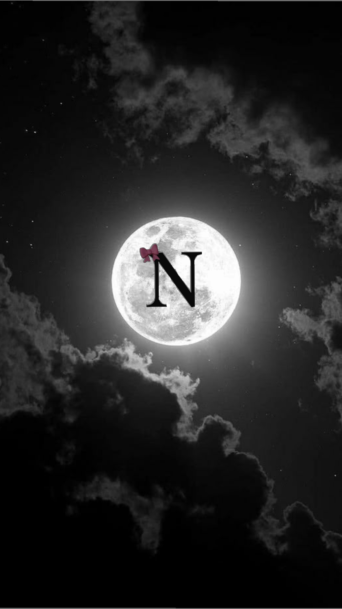

Nhyira
15 · Tema · JHS 3
Quiet in class, loud at home, always sleeping at my leisure time.
About Me
Hello,my name is Nhyira. I live in Tema with my parents,and my siblings Akua and kobby, and our dog called Luna. Most mornings my mom wakes me up early but still I don't how I manage to go back to bed and wake up late so I rush through my chores, and still somehow make it to school before class starts - usually.
I'm not the loudest person in my class, but I pay attention. I like learning things that feel useful, especially when it comes to computers and design. On weekends you'll find me watching cartoons, helping my mum in the kitchen,scrolling TikTok way longer than I should or read a story book before I have my nap.
This page is just me - the real me. Not perfect, not trying too hard. Just a girl from Ghana figuring out who she wants to become and what she wants to achieve. I don't have all the answers yet, but I'm learning and growing every day. I hope you enjoy getting to know me a little better.
A Few Things About Me
- Favorite food
- My favorite food is Jollof rice.
- Favorite sport
- Basketball- I never miss a match.
- What I love doing
- Listening to music,and gossiping with my friends Happy,Maggie and Nhyira.
- Favorite book
- The 28th Februaray house - I read it twice.
- Favorite artist
- Black Sherif. That voice just hits different.
- Dream job
- Lawyer - I want to help people solve problems and protect their rights.
- Dream school
- University of Ghana.
- Fun fact
- I enjoy debating and discussing ideas with others.
Where I'm Headed
Right now I'm focused on learning how to build a website for students to help them track their savings. I know the road is not easy - fees, pressure, everyone asking what you want to do with your life,which school you would like to attend,the results - but I believe hard work pays. My granny always says, "Study until you don't have to worry about the results."
One day I want to build something of my own. Maybe an app that helps students revise their lessons. For now, I'm taking it one term at a time and trying to enjoy the journey.